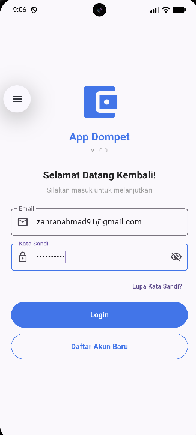
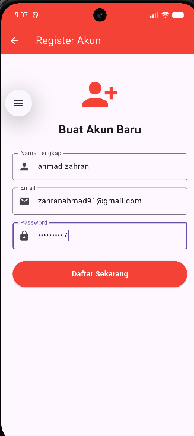
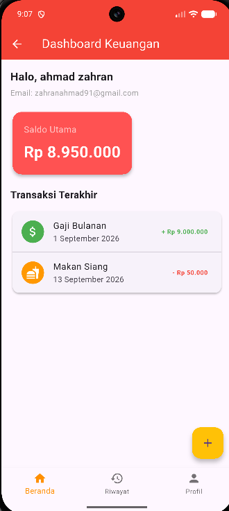
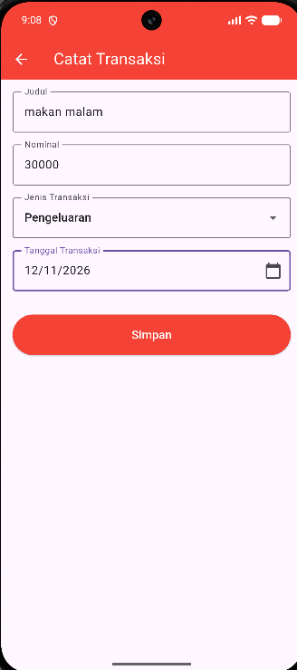
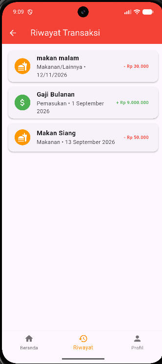
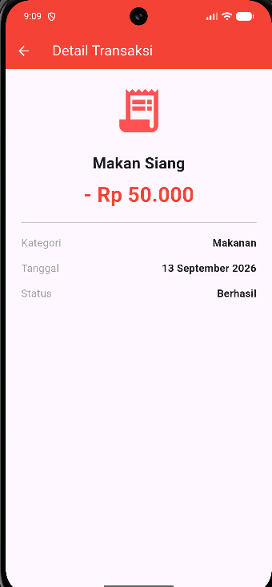
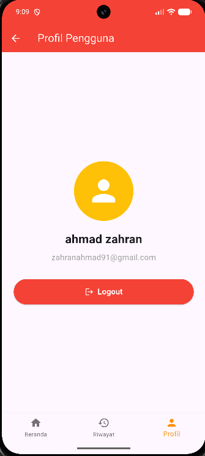

Pengembangan aplikasi perangkat bergerak (mobile application) modern membutuhkan pengorganisasian kode yang terstruktur antara lapisan model data, manajemen status tampilan (state management), validasi input formulir, serta sistem navigasi multi-layar. Framework Flutter yang berbasis bahasa pemrograman Dart membangun antarmuka pengguna secara deklaratif menggunakan susunan widget, baik yang bersifat statis (StatelessWidget) maupun dinamis yang mampu memperbarui tampilan melalui setState() pada StatefulWidget.
Pada praktikum ini, dikembangkan aplikasi pencatatan keuangan pribadi bernama App Dompet (v1.0.0) yang terdiri atas 10 berkas kode sumber Dart. Aplikasi ini mencakup alur penggunaan secara menyeluruh: mulai dari pendaftaran akun pengguna baru (RegisterScreen) dan autentikasi masuk (LoginScreen), kerangka navigasi utama menggunakan bilah navigasi bawah (BottomNavigationBar pada MainScreen), perhitungan saldo utama otomatis dari akumulasi pemasukan dan pengeluaran pada DashboardScreen, pencatatan transaksi baru melalui formulir tervalidasi dan showDatePicker pada AddTransactionScreen, penelusuran daftar riwayat transaksi dengan ListView.builder pada HistoryScreen, penampilan rincian item pada TransactionDetailScreen, hingga manajemen sesi pengguna dan fitur Logout pada ProfileScreen.
Di sisi pengelolaan data, aplikasi memisahkan struktur entitas ke dalam kelas model UserModel (user_model.dart) dan TransactionModel (transaction_model.dart) yang dilengkapi metode serialisasi toMap() dan factory constructor fromMap() untuk berinteraksi secara asinkron (async/await) dengan penyimpanan basis data lokal melalui DatabaseHelper.
Merancang kelas model data (UserModel dan TransactionModel) beserta metode konversi toMap() dan factory constructor fromMap() untuk integrasi basis data lokal.
Mengimplementasikan alur autentikasi pengguna pada LoginScreen dan RegisterScreen lengkap dengan validasi formulir, fitur sembunyi/lihat kata sandi (obscureText), dan umpan balik SnackBar.
Menerapkan struktur navigasi utama berbasis BottomNavigationBar pada MainScreen untuk menghubungkan halaman Beranda, Riwayat, dan Profil.
Mengelola pembacaan daftar transaksi secara asinkron serta menghitung akumulasi Saldo Utama secara otomatis dari selisih transaksi Pemasukan dan Pengeluaran pada DashboardScreen.
Membangun formulir pencatatan transaksi baru pada AddTransactionScreen menggunakan TextFormField, pembersihan karakter nominal dengan RegExp, DropdownButtonFormField, dan showDatePicker.
Menyajikan riwayat transaksi secara dinamis menggunakan ListView.builder pada HistoryScreen serta mengirimkan detail transaksi melalui konstruktor ke TransactionDetailScreen.
Mengelola informasi sesi pengguna aktif (DatabaseHelper.currentUser) dan mengimplementasikan fungsi keluar akun (Logout) menggunakan Navigator.pushReplacementNamed pada ProfileScreen.
Program aplikasi App Dompet disusun ke dalam 10 berkas Dart yang saling berelasi. Dua berkas berperan sebagai Model Data, sedangkan delapan berkas lainnya berperan sebagai Halaman Antarmuka (Screen) yang berkomunikasi dengan basis data lokal melalui DatabaseHelper:
| No | Nama File Dart | Kelas & Tipe Widget | Peran Utama dan Hubungan Antar-File |
|---|---|---|---|
| 1 | user_model.dart |
UserModelModel Class |
Menyimpan struktur data pengguna (id, name, email, password) serta fungsi toMap() dan fromMap(). Digunakan oleh register_screen.dart, login_screen.dart, dashboard_screen.dart, dan profile_screen.dart. |
| 2 | transaction_model.dart |
TransactionModelModel Class |
Menyimpan atribut transaksi (id, title, amount, type, category, date). Digunakan oleh add_transaction_screen.dart, dashboard_screen.dart, dan history_screen.dart. |
| 3 | login_screen.dart |
LoginScreenStatefulWidget |
Halaman autentikasi masuk. Memvalidasi kredensial melalui DatabaseHelper.instance.loginUser(), lalu bernavigasi ke rute '/' (MainScreen) atau ke rute '/register' (RegisterScreen). |
| 4 | register_screen.dart |
RegisterScreenStatefulWidget |
Halaman pendaftaran akun baru. Membuat objek UserModel, menyimpannya melalui DatabaseHelper.instance.registerUser(), lalu kembali ke LoginScreen dengan Navigator.pop(). |
| 5 | main_screen.dart |
MainScreenStatefulWidget |
Wadah navigasi utama aplikasi setelah login. Mengelola BottomNavigationBar dengan 3 tab: DashboardScreen (indeks 0), HistoryScreen (indeks 1), dan ProfileScreen (indeks 2). |
| 6 | dashboard_screen.dart |
DashboardScreenStatefulWidget |
Menampilkan sapaan pengguna aktif, kartu Saldo Utama, daftar transaksi terakhir, tombol FloatingActionButton menuju rute '/add', serta navigasi item ke TransactionDetailScreen. |
| 7 | add_transaction_screen.dart |
AddTransactionScreenStatefulWidget |
Formulir pencatatan transaksi baru dengan DropdownButtonFormField dan showDatePicker. Menyimpan data via insertTransaction() lalu kembali ke DashboardScreen. |
| 8 | history_screen.dart |
HistoryScreenStatefulWidget |
Menampilkan seluruh riwayat transaksi secara efisien dengan ListView.builder dan mengarahkan item yang diketuk ke TransactionDetailScreen. |
| 9 | transaction_detail_screen.dart |
TransactionDetailScreenStatelessWidget |
Menerima parameter title, amount, category, dan date melalui konstruktor dari DashboardScreen atau HistoryScreen, lalu menampilkan rincian transaksi. |
| 10 | profile_screen.dart |
ProfileScreenStatelessWidget |
Menampilkan identitas pengguna aktif (DatabaseHelper.currentUser) serta menyediakan tombol Logout yang mengatur currentUser = null dan mengarahkan ke rute '/login'. |
Berikut adalah urutan tahapan pengerjaan praktikum beserta pencantuman kode program asli dan penjelasan logika untuk seluruh 10 berkas Dart pada aplikasi App Dompet:
Tahap Pengerjaan: Mendefinisikan kelas model data untuk merepresentasikan entitas pengguna (UserModel) dan entitas transaksi keuangan (TransactionModel), lengkap dengan metode konversi objek ke struktur Map<String, dynamic>.
Penjelasan Kode user_model.dart:
final int? id;: Menyimpan kunci utama (primary key) pengguna yang bersifat opsional/nullable karena nilai ID baru dibuat secara otomatis oleh database saat penyimpanan.final String name, email, password;: Atribut bertipe final (immutable) untuk menyimpan nama lengkap, alamat email, dan kata sandi pengguna.toMap(): Mengubah objek UserModel menjadi struktur Map<String, dynamic> agar siap disimpan ke tabel database lokal.factory UserModel.fromMap(...): Mengonversi baris data berbentuk Map dari hasil kueri database kembali menjadi objek UserModel.Penjelasan Kode transaction_model.dart:
title, amount, type, category, date: Menyimpan judul transaksi, nominal uang dalam bilangan bulat (int), jenis transaksi ('Pemasukan' atau 'Pengeluaran'), kategori, serta string tanggal transaksi.toMap() & TransactionModel.fromMap(): Menangani serialisasi dan deserialisasi data antara objek Dart dan tabel transaksi pada DatabaseHelper.
Tahap Pengerjaan: Membangun halaman masuk aplikasi App Dompet v1.0.0 menggunakan StatefulWidget untuk mengelola status sembunyi/lihat kata sandi (_obscurePassword) serta memvalidasi kredensial login ke database.
Penjelasan Kode login_screen.dart:
_formKey, _emailController, _passwordController: Mengelola validasi form dan menangkap teks input email serta kata sandi. Keduanya dibersihkan pada metode dispose().bool _obscurePassword = true;: Variabel state untuk menyembunyikan teks kata sandi secara default dan dapat diubah melalui IconButton mata menggunakan setState()._handleLogin(): Memanggil DatabaseHelper.instance.loginUser() secara asinkron. Jika berhasil (user != null), halaman diganti ke rute '/' menggunakan Navigator.pushReplacementNamed(context, '/'); jika gagal, menampilkan SnackBar merah.StadiumBorder(): Memberikan tampilan tombol berbentuk kapsul penuh pada tombol ElevatedButton (Login) dan OutlinedButton (Daftar Akun Baru).Hasil Praktikum:

Tahap Pengerjaan: Membuat halaman pendaftaran akun baru yang memvalidasi input Nama Lengkap, Email, dan Password, lalu menyimpannya sebagai objek UserModel melalui DatabaseHelper.instance.registerUser().
Penjelasan Kode register_screen.dart:
_handleRegister(): Membungkus teks dari _nameController, _emailController, dan _passwordController ke dalam objek UserModel baru.DatabaseHelper.instance.registerUser(newUser): Mengembalikan nilai true apabila email belum terdaftar, lalu memunculkan SnackBar hijau dan memanggil Navigator.pop(context) untuk kembali ke halaman Login. Apabila email sudah digunakan (false), muncul SnackBar merah.Hasil Praktikum:

Tahap Pengerjaan: Menyusun halaman kontainer utama (MainScreen) yang menampung tiga layar anak (DashboardScreen, HistoryScreen, dan ProfileScreen) serta mengatur perpindahan tab melalui BottomNavigationBar.
Penjelasan Kode main_screen.dart:
int _selectedIndex = 0;: Menyimpan indeks tab yang sedang aktif, dimulai dari indeks 0 (Beranda).final List<Widget> _pages: Daftar halaman yang dirender pada properti body: _pages[_selectedIndex]._onItemTapped(int index): Memperbarui nilai _selectedIndex di dalam setState() saat pengguna menekan salah satu item pada BottomNavigationBar.
Tahap Pengerjaan: Menampilkan sapaan pengguna aktif, menghitung total Saldo Utama secara otomatis dari selisih transaksi Pemasukan dan Pengeluaran, menampilkan daftar transaksi terakhir, serta menyediakan tombol FloatingActionButton menuju rute '/add'.
Penjelasan Kode dashboard_screen.dart:
_loadData(): Dipanggil pada initState() dan setelah kembali dari rute '/add'. Fungsi ini membaca daftar transaksi dari DatabaseHelper.instance.getTransactions(), menjumlahkan nominal bertipe 'Pemasukan', serta mengurangkan nominal 'Pengeluaran' untuk memperoleh _totalBalance.DatabaseHelper.currentUser: Menampilkan nama dan email pengguna yang sedang login, dengan nilai fallback 'Zahran' dan 'zahran@student.ac.id'._buildBalanceCard() & _buildTransactionList(): Merender kartu merah Saldo Utama dengan format Rupiah serta daftar transaksi terakhir yang dapat diketuk (onTap) untuk membuka TransactionDetailScreen.Hasil Praktikum:

Tahap Pengerjaan: Mengimplementasikan halaman formulir input transaksi dengan pembersihan karakter non-angka menggunakan RegExp(r'[^0-9]'), pemilihan jenis transaksi (Pengeluaran atau Pemasukan) menggunakan DropdownButtonFormField, dan pemilihan tanggal menggunakan showDatePicker.
Penjelasan Kode add_transaction_screen.dart:
cleanAmount: Membersihkan input nominal dari titik, koma, atau karakter non-digit menggunakan RegExp(r'[^0-9]') lalu mengubahnya menjadi int dengan int.tryParse(...) ?? 0.DropdownButtonFormField<String>: Memungkinkan pengguna memilih jenis transaksi 'Pengeluaran' atau 'Pemasukan', yang secara otomatis menetapkan kategori menjadi 'Pemasukan' atau 'Makanan/Lainnya'._selectDate() & _saveTransaction(): Memformat tanggal terpilih menjadi DD/MM/YYYY dengan padLeft(2, '0'), menyimpan objek TransactionModel ke database lokal, menampilkan SnackBar hijau, lalu memanggil Navigator.pop(context, true).Hasil Praktikum:

Tahap Pengerjaan: Menyusun halaman riwayat transaksi berbasis ListView.builder (history_screen.dart), halaman rincian transaksi berparameter konstruktor (transaction_detail_screen.dart), serta halaman profil pengguna dengan fungsi Logout (profile_screen.dart).
Penjelasan Kode history_screen.dart:
_loadHistory(): Mengambil daftar seluruh transaksi dari DatabaseHelper.instance.getTransactions() saat inisialisasi widget.ListView.builder: Merender daftar kartu transaksi secara efisien sesuai jumlah item (itemCount: _transactions.length) dengan menampilkan subjudul gabungan '${item.category} • ${item.date}'.Hasil Praktikum (Riwayat):

Penjelasan Kode transaction_detail_screen.dart:
StatelessWidget dengan parameter konstruktor required: Menerima data title, amount, category, dan date dari DashboardScreen maupun HistoryScreen._buildDetailRow(): Fungsi pembantu untuk menyusun baris label dan nilai secara sejajar menggunakan MainAxisAlignment.spaceBetween.Hasil Praktikum (Detail Transaksi):

Penjelasan Kode profile_screen.dart:
CircleAvatar & Identitas Pengguna: Menampilkan avatar kuning amber beserta nama dan email dari DatabaseHelper.currentUser.Logout (ElevatedButton.icon): Menghapus sesi pengguna aktif dengan mengatur DatabaseHelper.currentUser = null dan memanggil Navigator.pushReplacementNamed(context, '/login') agar pengguna kembali ke halaman Login.Hasil Praktikum (Profil):

UserModel (user_model.dart) dan TransactionModel (transaction_model.dart) beserta metode toMap() dan fromMap() mempermudah proses serialisasi data ke database lokal (DatabaseHelper).
LoginScreen dan RegisterScreen berhasil memvalidasi masukan pengguna menggunakan Form dan GlobalKey<FormState>, mengelola visibilitas kata sandi dengan setState(), serta memberikan umpan balik menggunakan SnackBar.
BottomNavigationBar pada MainScreen memungkinkan perpindahan antarhalaman utama (DashboardScreen, HistoryScreen, dan ProfileScreen) secara reaktif tanpa kehilangan konteks navigasi.
DashboardScreen dengan mengakumulasikan selisih nominal transaksi bertipe Pemasukan dan Pengeluaran, serta diperbarui otomatis setelah penambahan transaksi baru di AddTransactionScreen.
ListView.builder pada HistoryScreen, pengiriman parameter konstruktor menuju TransactionDetailScreen, serta manajemen sesi keluar (DatabaseHelper.currentUser = null) pada ProfileScreen menghasilkan aplikasi pencatatan keuangan multi-halaman yang utuh, terstruktur, dan responsif.